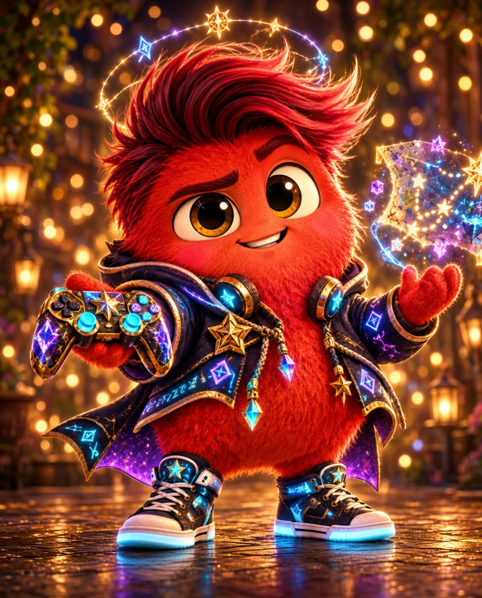
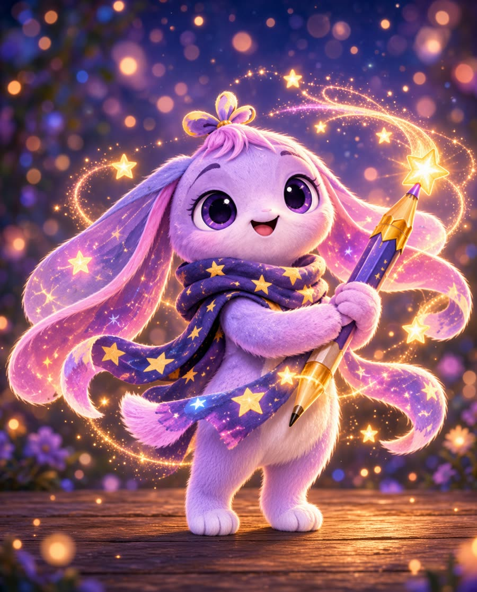
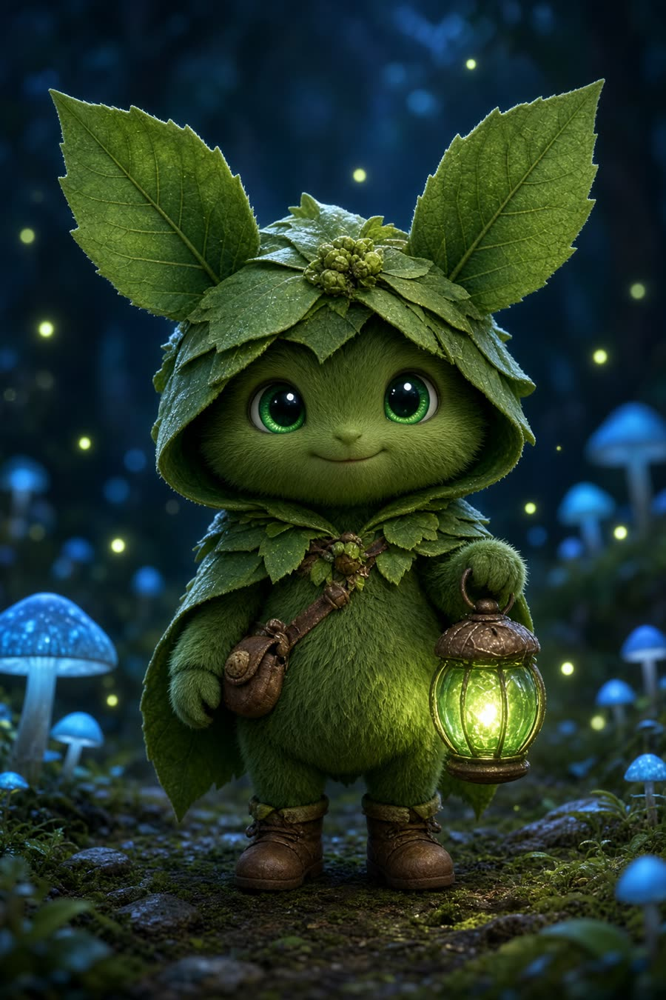
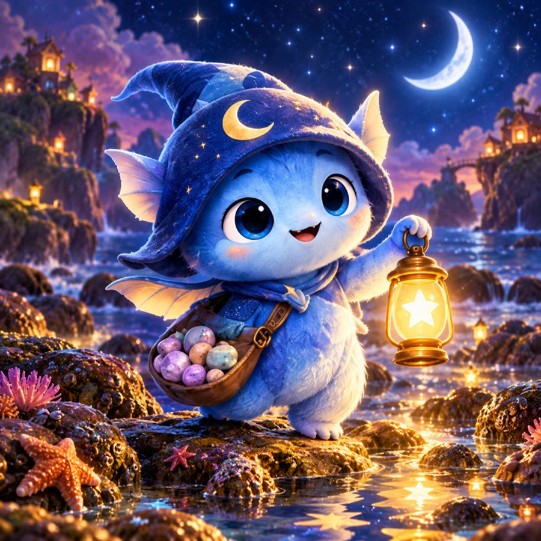
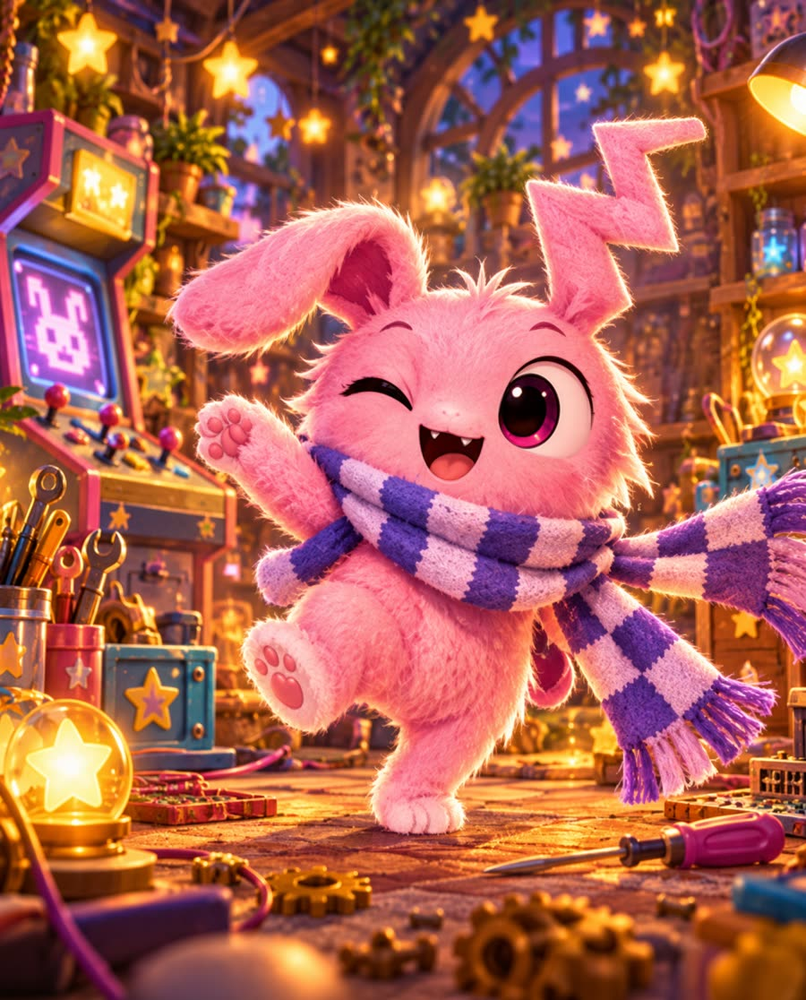

Lumo
Hyperfixation Gremlin · Questlight
Player one, crew first. Lumo pauses the quest if you need a breath.
Little friends from a brighter tomorrow
Five bedtime friends. They tell a long story, play a small game in the middle, and stay quiet when they have no recording. The bond stays on this device.

Hyperfixation Gremlin · Questlight
Player one, crew first. Lumo pauses the quest if you need a breath.

Spooky Poet · Dreamlight
She keeps the pencil until you are ready for the next page.

Quiet Garden Sprite · Traillight
The trail can wait. Sprout walks it with you, slowly.

Cosmic Weirdo · Tidelight
Small questions get a small, steady answer. Then rest.

Chaos Gremlin · Sparklight
A kind glitch. The sparkles turn down to a night-light.
Open a story. It is twelve pages. Two of them are games: roll a die, count, guess, or spot the one that does not match. Then the book closes.
A children’s page should not collect them.